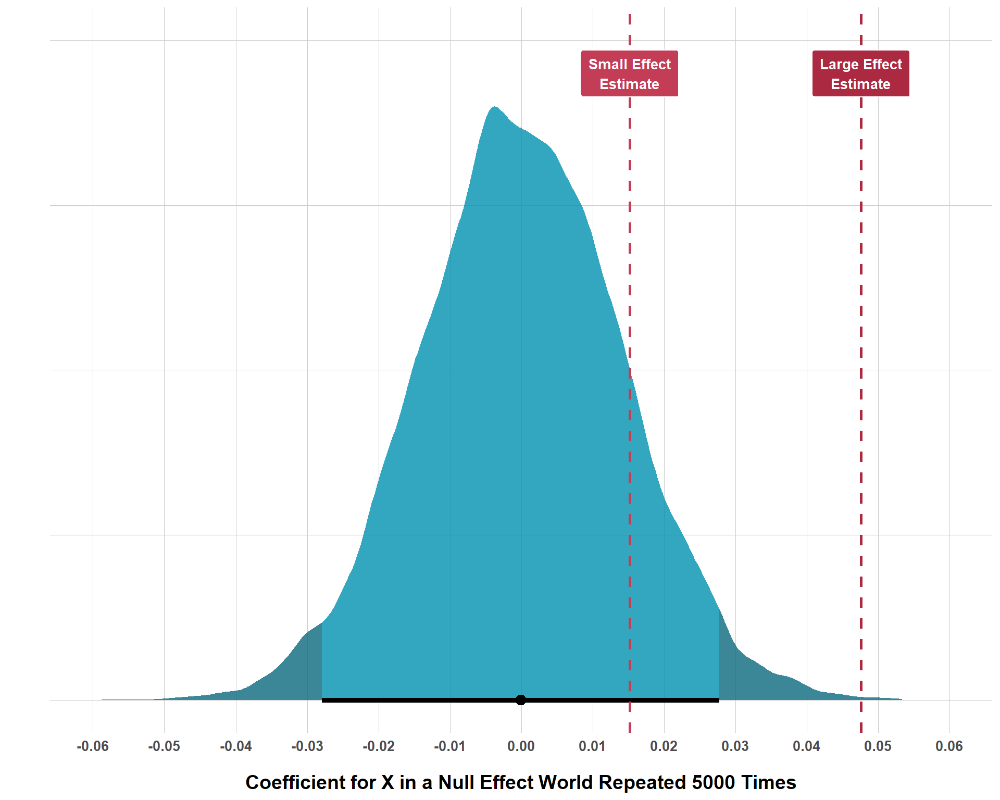
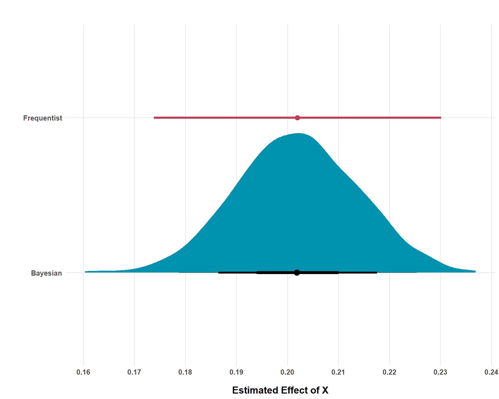
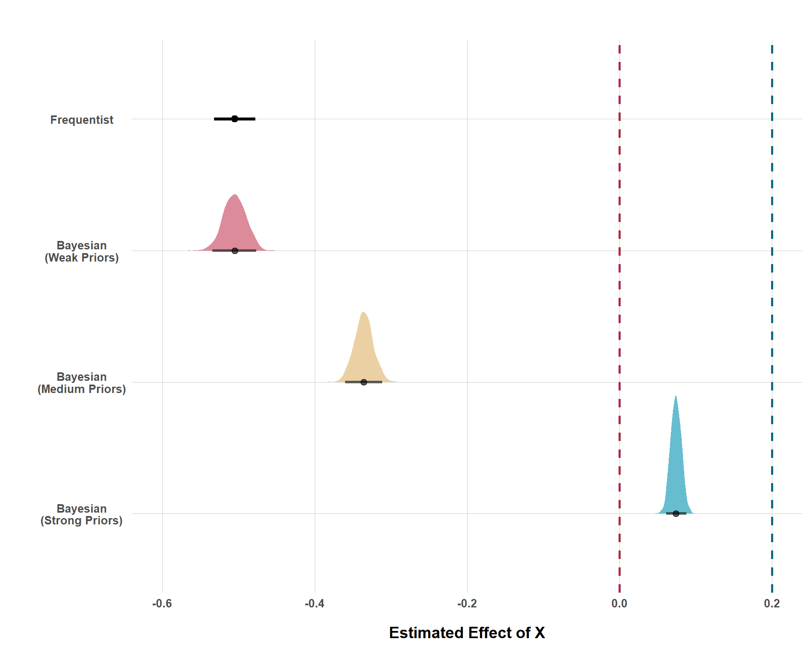

Three Points for Bayesian Statistics in Conflict Research
bayes
causal inference
civil conflict
Bayesian inference is rarely used in quantitative conflict research (and a lot of the broader social sciences too). In this blog post, I point out some reasons for why we ought to change that!
Published
July 1, 2025
Code
# Load Librariespacman::p_load("dplyr", # Data Manipulation"ggplot2", # Data Visualization"ggtext", # Colored Text in Plots"ggdist", # Cool Distribution Plots"brms", # Bayesian Regression"cmdstanr", # Bayesian Computation"tidybayes", # Bayesian Visualization"patchwork", # Combining Plotsinstall =FALSE)# Define a Custom Themeblog_theme <-function() {theme_bw() +theme(panel.grid.major =element_line(color ="gray80", size =0.3),panel.grid.minor =element_blank(),panel.border =element_blank(),plot.background =element_rect(fill ="white", color =NA),plot.title =element_text(face ="bold", size =16, margin =margin(t =0, r =0, b =15, l =0)),axis.title.x =element_text(face ="bold", size =14, margin =margin(t =15, r =0, b =0, l =0)),axis.title.y =element_text(face ="bold", size =14, margin =margin(t =0, r =15, b =0, l =0)),strip.text =element_text(face ="bold"),axis.text.x =element_text(face ="bold", size =10), axis.text.y =element_text(face ="bold", size =10), axis.ticks.x =element_blank(), axis.ticks.y =element_blank(), strip.background =element_rect(fill ="grey80", color =NA),legend.title =element_text(face ="bold", size =14),legend.text =element_text(face ="bold", size =10, color ="grey25"), )}# Establish a Custom Color Schemecolors <-c("#0a697d","#0091af","#ddb067","#c43d56","#ab2a42")options(scipen =999)
Bayesian methods are basically unheard of in quantitative conflict research (QCR) - aka the statistical study of things like civil war, terrorism, violence against civilians, conflict resolution, etc. This might lead to the impression that Bayesian methods are simply not needed in QCR. But such an impression is far from the truth!
I would argue that Bayesian methods are incredibly under-represented in QCR due to entrenched institutional norms, a lack of method familiarity with reviewers and peers, and the added (but oftentimes necessary) burden that conducting a Bayesian analysis requires (prior elicitation, computation time, etc.).
While these excuses may not be the best, the lack of Bayesian representation in QCR would not be that big of a deal if Bayesian statistics were jusr not very needed. However, I would argue the very opposite is true. Bayesian approaches offer a wide range of features that lend themselves well to QCR. Likewise, and crucially important, frequentist (the default) statistical approaches are accompanied by many properties that are very difficult to justify in the context of QCR.
In this blog, I will go over three points that ask the quantitative conflict researcher why they should use frequentist statistics in favor of Bayesian statistics. Too often, the decision to use frequentist statistics is never justified and is assumed as the de facto approach. But I want to challenge this and force the quantitative conflict researcher to justify their decision on this methodological front.
And for those not familiar, I will not be providing a primer on the differences between frequentist and Bayesian statistics.1 However, I can provide two very simple points where these approaches differ because I think that knowing these things is helpful for understanding the methodological points that are made in this blog.
First, frequentists and Bayesians operate under different definitions of probability. For the frequentist, probability is understood as the long-run frequency of a given event over the total number of instances. The canonical example is a coin flip. If I flipped a coin 100 times and it landed on heads 51 out of those 100 times, a frequentist definition of probability would say that, from this trial, the probability of that coin landing on heads is 51%.
In contrast, Bayesians view probability as a subjective degree of belief. The value of Bayesian statistics becomes manifest when we depart from the coin flip example, which happens to suit the frequentist understanding of probability very well. For example, consider the 2024 U.S. presidential election. We cannot run that election over and over again 100, 1,000, or a million times and see how many times Trump won versus how many times Harris won. It is only possible for one 2024 presidential election to occur.
Under the Bayesian approach for this case, we can still discuss probability, but as a degree of belief instead of the number of times one candidate wins over multiple hypothetical trials. For example, say I built a model that gave Donald Trump a 90% probability to win the election. As a Bayesian, I could simply say that Donald Trump has a 90% chance to win the election, which means that it is very likely that Trump will win the election. While that interpretation is a bit more vague, it is a definition that is both intuitive for human understanding and is applicable for the situation at hand.
And if you’re still unsure, imagine that I interpreted this 90% under the frequentist framework (90% of the time, Donald Trump wins the election)… So what does that mean, again, if there is only one election? If we are talking about thousands of hypothetical 2024 presidential elections, on what grounds are we able to simulate the elections that are different from the one we observed? What is the source of random variability between every run of the hypothetical election and how can we justify that?
As a final note before we move on to the three points, it’s also important to know that the estimated probability of something under a Bayesian approach is not something that is necessarily entirely estimated directly from the data. We can formally build in prior information to influence what we find. That might sound fishy to those unfamiliar, but we will talk about that in Points 2 and 3.
And I think that’s all the background information that we’ll need for now, so let’s jump into it!
Point 1: The Application Problem
For reasons that are not well-defined, the importance, quality or relevance of much quantitative conflict research centers around results from null hypothesis significance testing (NHST). This manifests as how small a p-value is (is it smaller than magical 0.05?) or whether 95% confidence intervals overlap with zero. These statistics are often the hallmark of any study operating under frequentist statistics.
Based on these two metrics, QCR studies are shelved, hacked, and published. So, surely these metrics are important for quantitative conflict scholarship, right?
Well, there’s a huge problem (the application problem actually). And to understand what this problem is, consider what NHST sets out to do and also consider what a p-value tells you. Under NHST, we hypothetically imagine that the null hypothesis of absolutely no effect is true. We also understand that, when working with data that is sampled from a population, we can get data that might claim an effect exists in the sample but, in reality, it does not exist in the population. We make inferences about the population from the sample so the primary goal of NHST is to see if our estimated effect is large enough so that it would be highly unlikely (typically 5% or less likely) to appear in a world where the population effect is exactly zero.
When a finding is statistically significant, we really mean that, from our sample, we can still make a pretty strong inference that the effect in the population of interest is non-zero. Note, NHST does not tell us how likely the probability that our estimated effect is true, nor does it tell us how likely the null hypothesis is to be true. It simply tells us how likely our data is (which the effect is estimated from) if the null is true.
Given this description, there are two huge problems as it relates to both the application and importance of NHST in QCR. First, just think about effect sizes. In the social sciences, there are probably thousands of things that affect other things. Social processes are notoriously complex and are often much more multi-faceted than physical processes. If we think about the “causes” of civil war, you could probably scrape the literature and find papers professing at least a thousand of unique things that allegedly influence the onset of civil conflict.
There are some obvious heavy hitters that probably influence the risk of civil war onset like economic development, repression, etc. However, the majority of “effects” (including the majority of papers on the topic) are likely investigating small effects. And the problem arises because most QCR studies are potentially too under-powered to actually detect small/very small effects under NHST.
To demonstrate, consider the following plot. To explain what is going on, I am simulating data with three variables: \(Y\) (the outcome), \(X\) (the hypothesized exposure that should impact \(Y\)), and \(Z\) (a potential confounder of the alleged \(X \rightarrow Y\) relationship). Now, within the simulation, \(X\) actually has no effect whatsoever on \(Y\). In other words, the null hypothesis of no effect whatsoever is true in this universe. With 5,000 observations each, I repeat this process of simulating data like this 10,000 times.
Code
# Create a Function to Create Thousands of Null Findingssim_null_world <-function(n_runs =10000, n_obs =5000) {set.seed(1234)# Store Results results <-data.frame(sim =1:n_runs,coef =NA )for (i in1:n_runs) {# Generate Variables Z <-rnorm(n_obs, 0, 1) X <-0.5* Z +rnorm(n_obs, 0, 1)# No Relationship Between X and Y Y <-0.3* Z +rnorm(n_obs, 0, 1)# Run a Model null_mod <-lm(Y ~ X + Z)# Store the Coefficient results$coef[i] =coef(null_mod)["X"] }return(results)}# Run the Functionnull_world_results <-sim_null_world()# Extract the 2.5% and 97.5% Tails for Plottingq <-quantile(null_world_results$coef, c(0.025, 0.975))lower <- q[1]upper <- q[2]# Simulate Two Alternative Examples Where You Get a Small and a Large Effect and Store Resultsset.seed(1234)n <-5000# Small EffectZ <-rnorm(n, 0, 1)X <-0.5* Z +rnorm(n, 0, 1)Y <-0.3* Z +0.015* X +rnorm(n, 0, 0.0985)small_effect <-data.frame(Z = Z, X = X, Y = Y)small_effect_results <-lm(Y ~ X + Z, data = small_effect)small_effect$results <-coef(small_effect_results)["X"]small_effect_est <-coef(small_effect_results)["X"]# Large EffectZ <-rnorm(n, 0, 1)X <-0.5* Z +rnorm(n, 0, 1)Y <-0.3* Z +0.05* X +rnorm(n, 0, 0.95)large_effect <-data.frame(Z = Z, X = X, Y = Y)large_effect_results <-lm(Y ~ X + Z, data = large_effect)large_effect$results <-coef(large_effect_results)["X"]large_effect_est <-coef(large_effect_results)["X"]# Plot Null Effect Distributionggplot(null_world_results, aes(x = coef)) +stat_halfeye(adjust =0.7,slab_alpha =0.8,color ="black",interval_size =7.5,aes(fill =after_stat(x < lower | x > upper)) ) +scale_fill_manual(values =c(colors[2], colors[1])) +geom_vline(aes(xintercept = small_effect_est), color = colors[4], size =1, linetype ="dashed") +geom_vline(aes(xintercept = large_effect_est), color = colors[5], size =1, linetype ="dashed") +annotate("label", x = small_effect_est, y =0.95, label ="Small Effect\nEstimate",fill = colors[4], color ="white", fontface ="bold",size =3.5, label.size =0.4, label.padding =unit(0.08, "inches") ) +annotate("label", x = large_effect_est, y =0.95, label ="Large Effect\nEstimate",fill = colors[5], color ="white", fontface ="bold",size =3.5, label.size =0.4, label.padding =unit(0.08, "inches") ) +scale_x_continuous(limits =c(-0.06, 0.06),breaks =seq(-0.06, 0.06, by =0.01) ) +labs(x ="Coefficient for X in a Null Effect World Repeated 5000 Times",y ="" ) +blog_theme() +theme(legend.position ="none",axis.text.y =element_blank(),axis.ticks.y =element_blank() )

Distribution of Estimated Effect Sizes in Null Effect Worlds
And, as you can see, even if the effect size of \(X\) is truly zero, simple random variation in each run of the simulation produces a distribution of results that are not exactly zero. This process simulates the type of random variation that can come about as a function of sampling. Even in a population where the true effect of \(X\) is zero, we could, just by pure chance, happen to sample and get a data set that demonstrates an \(X\) effect that is not exactly zero.
The shaded region at each tail of the distribution reflects the smallest 2.5% and largest 97.5% segments of the distribution. In other words, these shaded regions reflect the 5% of the data that is the least likely to be observed if the null hypothesis is true. While what I did is not exactly computing what a p-value is, the intuition is fairly similar. Simply put, if you found that your effect was in one of these shaded regions, you could say that, if the null was true, there would be only up to a 5% probability of observing an effect at least as extreme as the one I observed. Which really just means, it’s very unlikely that the true effect is null.
If you end up getting a very large effect, your result will probably be statistically significant because it would take some insane luck for you to sample from the population where no effect exists and just so happen to get the data that seems to indicate that a really large sample exists. On the other hand, if the true population effect is small, it’s actually really easy to estimate an effect that is not statistically significant because random chance from a world where the null is true is much more likely to produce an effect that is closer to zero.
As a part of the simulation exercise, I also simulated two other worlds with a larger effect size (0.05) and another with a much smaller effect size (0.015). Note, in these simulated worlds, these are the actual objective effects. Put up against the plot, you can see that, with 5,000 observations, we are able to reject the null hypothesis for the large effect, but we are unable to reject the null for the small effect size, even with the same number of observations. The following tables gives us the percentage of how many times that, by random chance, a null world produces results that are at least as extreme as the true effects in the worlds that have non-null effects.
As you can see, a null world can create a result at least as large as 0.05 occurs only 0.06% of the time, which is well below 5%, 1%, or even 0.1% (so this result would get the magical three asterisks). However, a null world produces results that are at least as large as 0.015 about 14% of the time, which is certainly higher than 5%, so it gets no magical asterisk nor does it get that sneaky cross symbol when the p-value is greater than 5% but less than 10%.
Does this mean that 0.015 isn’t true or that it’s the wrong effect size or that the null is actually true instead? None of the above! This is just a basic limitation of NHST and you can really only handle it by increasing your sample size to amounts that are typically way larger than we are probably ever going to get in QCR. Again, it’s not a huge deal if you’re estimating a large effect, but most effect sizes in QCR aren’t very large. Further, our sample sizes aren’t the biggest in the world and, to add the cherry on top, we often include things like interaction terms in our models which require even greater sample sizes to not reject true small findings. This represents the first part of why NHST (a key, and often, the only form of frequentest significance testing used in QCR) is highly questionable in its applicability for QCR research.
But, what if we did have super large sample sizes? Problem solved? Not really, because there’s actually a more conceptual problem that, when you spell it out, makes one wonder why frequentist inference is applicable at all for most QCR.
I was first exposed to this problem with Western and Jackman’s (1997) paper and Berk et al.’s (1995) paper. Western and Jackman refer to most “comparative data” (which is applicable for QCR data) as “non-stochastic”. By this, they mean that comparative data is non-repeatable and is generated by an unknown probability mechanism.
We can contrast how most QCR data is generated with the canonical example that sets up the motivation for NHST. In this example, we would be randomly sampling from a population. From this case, we would know the probability mechanism for how we acquire data from the population (it’s random) and it is repeatable (we can sample again and again and again and get slightly different data each time).
QCR data is not like this. We oftentimes are not sampling but working with basically the entire universe of cases that is the same each time. We do not randomly sample from the Correlates of War or UCDP. We download the same data every time and it only changes when new country-year observations are added. In other words, you could say that we actually work with the population (an “apparent population”), rather than with a sample from the population. Such data is non-stochastic and, once we understand that, it makes us question why we use frequentist inference at all.
Recall the earlier conversation around p-values. We started off with the assumption that its possible to get an effect that is non-null even if the actual effect is null due to random variation which could come about from a random sampling process from the target population. But… how does this make any sense for QCR data? We are not working with samples, so what uncertainty do we care about? What does a p-value actually tell us?
For QCR data that does work with samples from a population, there is no conceptual problem. Imagine you’re working with a study that uses a survey which randomly sampled survivors of one-sided violence. We understand that we could randomly sample over and over again and get different results, so we understand that the data we collected could be a little off from the entire population of one-sided violence survivors. But, what if our study instead focused on states in civil conflict? That data is collected and recorded. It is not sampled. So, what value is there in conducting significance tests that assume our data is a random sample draw from a broader population?
What does a p-value of 0.25 tell me in this scenario? “If the target population effect is actually zero, then we’d see an effect at least as large as yours 25% of the time, so it’s an insignificant effect”. So what? I’m not working with a sample, I’m working with the population data already. And, assuming I did all of my causal inference stuff right, perhaps I find a non-null effect. In such cases, what seems actually insignificant is not my estimated effect size but the applicability of NHST entirely.
Point 2: The Interpretation Issue
The second point addressed here is less theoretical and more practical. Take the p-value, for example. As stated earlier, how small that p-value is oftentimes determines how a paper is framed and whether or not the paper ever sees the light of day. In QCR, this importance is kind of nonsensical, especially because many researchers and consumers of QCR struggle to interpret what exactly the p-value tells us.
Now, it’s not a mystery. It’s not like statisticians do not know what a p-value is. Rather, the problem lies with the applied folks. If I find that something is “statistically significant (\(p\) < 0.05), how do I actually interpret that? Is it the probability of my hypothesis? Obviously not… Is it the probability of the null hypothesis? After all, it is called null hypothesis significance testing. But no, this is not true. The p-value is not a test of a hypothesis at all. It is instead a test of your data (that produced the result) under a fixed assumption that the null hypothesis is true. In other words, a p-value of 0.05 means that we would expect the data to produce a result at least as extreme as the one we estimated 5% of the time if the null hypothesis is true.
Totally strip away how applicable such an analysis may be in the first place and ask yourself… how intuitive is this? Could I easily explain this to laymen stakeholders? Does such an interpretation quantify uncertainty in the way that I want it to?
No, the p-value is oftentimes not ideal (as discussed earlier). It is difficult to interpret and communicate and it is rather narrow in its coverage. However, frequentist analysis often report 95% confidence intervals instead of p-values. And, while I admit, these look better and lend themselves well to visualizations, we do not escape the interpretation problem. In the following figure, I plot a standard 95% confidence interval from a frequentist model and a Bayesian credible interval from a Bayesian model side-by-side for comparative purposes. Doing this will really emphasize why the Bayesian approach wins out on the interpretation side of things.
Code
set.seed(1234)n <-5000# Simulate DataZ <-rnorm(n, 0, 1)X <-0.5* Z +rnorm(n, 0, 1)Y <-0.3* Z +0.2* X +rnorm(n, 0, 1)data <-data.frame(Z = Z, X = X, Y = Y)# Estimate Frequentist Resultsfreq_results <-lm(Y ~ X + Z, data = data)# Extract Frequentist Estimate and Confidence Intervalsfreq_ci <-confint(freq_results)["X", ]freq_est <-coef(freq_results)["X"]freq_df <-tibble(model ="Frequentist",estimate = freq_est,lower = freq_ci[1],upper = freq_ci[2])# Estimate a Bayesian Modelpriors <-c(prior(normal(0, 0.05), class ="Intercept"),prior(normal(0.2, 0.025), class ="b", coef ="X"),prior(normal(0.3, 0.025), class ="b", coef ="Z"),prior(exponential(1), class ="sigma"))bayes_mod <-brm(formula = Y ~ X + Z,data = data,family =gaussian(),prior = priors,chains =4, cores =4, iter =1000,seed =1234, backend ="cmdstanr",refresh =0)bayes_draws <- bayes_mod |>spread_draws(b_X)bayes_df <- bayes_draws |>rename(estimate = b_X) |>mutate(model ="Bayesian")freq_point <-tibble(estimate = freq_est,model ="Frequentist")ggplot(bayes_df, aes(x = estimate, y = model)) +stat_halfeye(.width =c(0.95, 0.80, 0.50),interval_size_range =c(0.2, 2), point_interval = mean_qi,fill = colors[2] ) +geom_pointinterval( data = freq_df,aes(x = estimate, y = model, xmin = lower, xmax = upper),color = colors[4],size =7 ) +scale_x_continuous(breaks =seq(from =0.16, to =0.24, by =0.01)) +labs(title ="",x ="Estimated Effect of X",y ="" ) +blog_theme()

95% Confidence Interval v. 95% Credible Interval
First, let’s go over how to interpret the frequentist result. Our point estimate is about 0.202. Cool, what about those tails though? Do they represent the uncertainty of our 0.202 estimate? That would be intuitive… But no, they do not. Instead, these 95% confidence intervals tell us that, if we repeated the same sampling procedure and study a lot of times and estimated a 95% confidence interval for each run, 95% of those confidence intervals would contain the true population value assuming all of our design and modeling choices were correct. That is a mouthful and just about the opposite of intuitive! Again, it also is not testing the probability of our point estimate being true!
Let’s contrast that mouthful with the Bayesian credible interval interpretation. Notice that we actually get a distribution of probabilities for each potential effect size. That alone is really cool. Also, notice that, around our estimate, there is a black line that gradually decreases in its thickness. Here is how easy it is to interpret credible intervals. There is a 95% chance that the estimate is within the range of 0.179 to 0.225 (the entire range of the horizontal line from each thin edge). We can move away from the more extreme values towards each tail by decreasing our certainty a bit. Looking at the medium-sized black line, we can see that there is an 80% chance that the estimate is within the range of 0.186 to 0.218. And naturally, there is a 50% chance that the estimate is within the range of 0.194 to 0.210. If we were interested in the probability of any particular effect size being the true effect size, we could just calculate it with our credible interval.
I would wager that the interpretation properties of the credible interval is certainly more preferable than the difficulties in interpretation and communication that confidence intervals give us, at least in the context of conducting QCR. Plus - and this is undeniable - credible intervals just look very nice.
Point 3: The Blank Slate Problem
It is very rare that any quantitative conflict researcher is the first pioneer in their domain of research. Instead, most of us are writing the 3000th or 7000th or whatever-th paper on the topic. We all understand this and clearly acknowledge this in our literature reviews. We even discuss what prior research has found and make efforts to categorize findings that are pretty consistent across different studies.
However, most quantitative conflict research designs do not make the same assumptions. Most research designs in QCR instead operate without formally incorporating any prior knowledge. Sure, prior knowledge impacts things like the questions we ask, how we measure things, perhaps our choice of control variables etc. But no prior information is leveraged that acknowledges what most prior research has found. I refer to this as a “blank slate” problem.
After all, if you ran the 2000th study looking at the effect of economic development on civil conflict and found a negative result, that would be very odd! I think most quantitative conflict researchers would also be shocked and, while certainly not good practice, many might start doing things like playing around with their control variables until “something looks right”. But this is obviously very poor practice because 1) it is not transparent and 2) it creates all sorts of causal inference problems.
However, this example does help us understand why executing your research as if it working with a blank slate is problematic. Bayesian statistics address this blank slate problem by acknowledging that science is a cumulative process and a Bayesian analysis allows us to incorporate prior information directly into the model. Rather than adding a researcher’s subjective bias to a design, priors can help decrease bias if appropriately informed.2 And, even if the priors don’t decrease bias or perhaps even increase bias, Bayesian researchers will spell out what their priors were so even these are up for scrutiny for other researchers to evaluate. So, let’s take a very simplistic look at the (potential) de-biasing properties of priors in action.
Below, I simulate data with the causal effect of \(X\) on \(Y\) being 0.2. The \(X \rightarrow Y\) relationship is confounded by \(Z\), but I will be running four separate regressions that purposely omit \(Z\). I am doing this to simulate a scenario when our designs omit adjustment for a confounder that we really ought to be adjusting for. And this certainly happens all the time in QCR. Why am I doing this? Well, it’s really a demonstration on how Bayesian statistics leverages its ability to incorporate prior knowledge to “regularize” estimates to prevent us from putting too much stock in results that prior information tells us is probably wrong.
The first model is a standard frequentist model, the likes of which are hegemonic in QCR. The latter three models are all Bayesian and all of their priors assume (correctly) that 0.2 is the average causal effect, but they differ in the strength of their prior convictions. The first of these models is the weak model which is incredibly unsure of its convictions. The second of these models is something I call the medium model which has much stronger convictions about 0.2 being the average causal effect, but is still open-minded towards various other (positive) effect sizes. Lastly, the strong model is very confident that the average effect size is 0.2. Like, extremely confident (unreasonably confident but again, this is an amateur teaching demonstration so give me a break).
Code
set.seed(1234)n <-5000Z <-rnorm(n, 0, 1)X <--1.5* Z +rnorm(n, 0, 1)Y <-1.5* Z +0.2* X +rnorm(n, 0, 1.5)confounded <-data.frame(Z = Z, X = X, Y = Y)# Estimate a Confounded Frequentist Modelfreq_confounded <-lm(Y ~ X, data = confounded)# Estimate a Bayesian Model with Weak Priorsconfounded_weak_priors <-c(prior(normal(0, 0.01), class ="Intercept"),prior(normal(0.2, 2), class ="b", coef ="X"),prior(exponential(1), class ="sigma"))weak_confounded_model <-brm(formula = Y ~ X,data = confounded,family =gaussian(),prior = confounded_weak_priors,chains =4, cores =4, iter =1000,seed =1234, backend ="cmdstanr",refresh =0)weak_draws <- weak_confounded_model |>spread_draws(b_X)# Estimate a Bayesian Model with Less-Weak Priorsconfounded_med_priors <-c(prior(normal(0, 0.01), class ="Intercept"),prior(normal(0.2, 0.025), class ="b", coef ="X"),prior(exponential(1), class ="sigma"))med_confounded_model <-brm(formula = Y ~ X,data = confounded,family =gaussian(),prior = confounded_med_priors,chains =4, cores =4, iter =1000,seed =1234, backend ="cmdstanr",refresh =0)med_draws <- med_confounded_model |>spread_draws(b_X)# Estimate a Bayesian Model with Strong Priorsconfounded_strong_priors <-c(prior(normal(0, 0.01), class ="Intercept"),prior(normal(0.2, 0.0075), class ="b", coef ="X"),prior(exponential(1), class ="sigma"))strong_confounded_model <-brm(formula = Y ~ X,data = confounded,family =gaussian(),prior = confounded_strong_priors,chains =4, cores =4, iter =1000,seed =1234, backend ="cmdstanr",refresh =0)strong_draws <- strong_confounded_model |>spread_draws(b_X)# Extract Frequentist Estimate and Confidence Intervalsfreq_ci <-confint(freq_confounded)["X", ]freq_est <-coef(freq_confounded)["X"]freq_df <-tibble(model ="Frequentist",estimate = freq_est,lower = freq_ci[1],upper = freq_ci[2])# Combine Draws of Bayesian Estimates Into a Single Data Frameweak_df <- weak_draws |>mutate(model ="Bayesian\n(Weak Priors)")med_df <- med_draws |>mutate(model ="Bayesian\n(Medium Priors)")strong_df <- strong_draws |>mutate(model ="Bayesian\n(Strong Priors)")bayes_df <-bind_rows(weak_df, med_df, strong_df) |>mutate(model =factor(model, levels =c("Frequentist","Bayesian\n(Strong Priors)","Bayesian\n(Medium Priors)","Bayesian\n(Weak Priors)")))ggplot() +# Plot the Frequentist Estimate Firstgeom_pointinterval(data = freq_df,aes(x = model, y = estimate, ymin = lower, ymax = upper),color ="black", size =5 ) +# Plot Bayesian Posteriorsstat_halfeye(data = bayes_df,aes(x = model, y = b_X, fill = model),alpha =0.6, .width =0.95,show.legend =FALSE ) +coord_flip() +scale_y_continuous(limits =c(-0.6, 0.2)) +geom_hline(yintercept =0, linetype ="dashed", color = colors[5], size =1) +geom_hline(yintercept =0.2, linetype ="dashed", color = colors[1], size =1) +scale_fill_manual(values =c("Bayesian\n(Weak Priors)"= colors[4],"Bayesian\n(Medium Priors)"= colors[3],"Bayesian\n(Strong Priors)"= colors[2] )) +labs(title ="",y ="Estimated Effect of X",x ="" ) +blog_theme() +theme(axis.text.y =element_text(hjust =0.5))

Frequentist and Three Bayesian Model Estimates with Confounded Data
Cool! So, what does this all mean? Again, we know that our analysis is fundamentally wrong from the start because we are purposefully omitting a confounder. But, applied researchers rarely know when and how wrong they are. This figure tells us that, under the standard frequentist approach, we’d be pretty confident that the effect of \(X\) is actually very negative. And again, that effect is far from 0, so we’d say it’s statistically significant with three stars! But this is very wrong! All prior research (in this scenario) suggested that \(X\) has a positive effect on \(Y\), but, because the frequentist framework does not let us build that in, failing to adjust for a confounder (again, which arguably every observational QCR study does), leads us to make the wrong conclusion.
But, as you can see with the second model, using super weak priors doesn’t really get us out of this problem. A very tepid demeanor of “well, it’s probably positive, but it could really be anything” just lets the data dominate the estimate. And, without adjusting for \(Z\), the conclusion we get from the data alone leads us down a very wrong path (but at least we get a pretty distribution plot with a more intuitive interpretation, so it has that going for it).
When incorporating “medium” priors, we see that the estimate, while still in the wrong direction, is nearing the correct effect size. The medium model is not perfect, but placing stronger convictions is serving to de-bias the model, rather than incurring more bias.
Lastly, when a researcher is extremely confident in a given effect size, the estimate is much closer to the actual truth, even with unadjusted confounding. Now, would anybody ever truly place such strong priors in an actual analysis? Probably not (or maybe? It just all depends on context and how much prior knowledge someone has). Still, this is demonstrative that even if we do something as consequential as omit an important confounder from the analysis, incorporation of informed priors can help de-bias our estimate from the bias we incurred by omitting a confounder. Had we just started from a blank slate, we would get a finding that would be very wrong and, perhaps more dangerous, very confident.
Conclusion
In conclusion, I am not making the case that Bayesian statistics are superior in every situation throughout all of history. I am not steeped enough in these philosophical words to claim that I am “this” or “that”. However, I do care deeply about the applied side of things. And, as a political scientist, I know a good deal about political science data. And I also know that, despite its dominance, frequentist statistics are simply not appropriate for much of this research, especially within the context of QCR.
Now, I have plenty of other complaints with contemporary QCR, and who knows, maybe I’ll write a blog about this one day. But, the three points brought up here do matter. As a final point, I want to stress that the incorporation of Bayesian statistics into QCR is not some “glamorous” or “fancy” tertiary tool that can “spice up” or make the results “better” in some marginal way. My point is that the existing paradigm is almost entirely inappropriate, and we should all ask ourselves, “why am I using this thing? What does it tell me? Should I be using something else?”
We can critique Bayesian stuff all we want, but, regardless of its weaknesses, we are nonetheless still stuck with the obvious and very serious problems with the status quo. I’m interested in how to address these problems and how to produce quantitative conflict research that answers the questions that we want answered and if Bayesian statistics are a good tool for this, then sign me up!
Footnotes
For those totally unfamiliar with the difference, you can do basically anything that you want under each approach (regression, matching, machine learning, etc.). Each can be used for causal inference, forecasting, description and meassurement, etc. This is not the domain on which they differ.↩︎
Of course, a Bayesian researcher could add very biased priors to the design intentionally. However, any proper Bayesian analysis worth its salt will report its priors and everyone else can subsequently critique the results on the grounds of the priors. This process is certainly more transparent than researchers “playing around” with control variables behind the scene to either get results that they like or get results that “look” right.↩︎